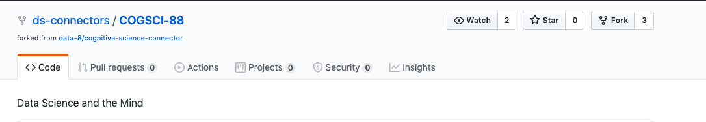

Domain Connector Courses¶
Overview
The Domain Connector Courses program weaves together core concepts and approaches from Data 8 with complementary ideas or areas. These courses allow students to use analytic tools from the Foundations Course and apply them within diverse disciplinary contexts. Students will gain additional experience, broader insights, and deeper theoretical or computational foundations. Courses include a combination of data science and domain-specific material, and are developed for and with departments across campus. The Connector Courses program are semester-long courses within a domain area, while the Data Science Modules are shorter lessons within an existing course.
Program Description
The Connector Courses bring together domain-specific instruction and outreach to faculty and instructors interested in doing the curriculum development, along with support from student developers and open-access materials, that benefit both the students and the repository of courses.
A key feature of the Connector Courses is the iterative process of development, and the repeated offering of the course. The open-access curriculum guide provides those who are considering developing or taking a Connector Course with specific and accessible information.
The Connector Courses program has two facets:
The undergraduate data science student development along with the
implementation of the curriculum by faculty and graduate students
The undergraduate data science student experience in applying data
science
Target Audience
The Domain Connector Courses are an opportunity for students looking to explore a specific domain area (in a two-unit seminar) that is entry-level by design, specifically meant not to be overwhelming. These courses are intended to be taken in the same semester as the Foundations Course, although many students also take them after they have taken the Foundations Course.
Goals
A Connector Course allows students to weave together core concepts and strategies from the Foundations Course with complementary class topics. Along the way, students gain additional experience, broader insights, and deeper theoretical or computational foundations. Instructors from across campus teach Domain Connector Courses. Data 8 and Connectors complement each other and often use similar materials, tools, and course infrastructure (e.g., DataHub, Piazza, Jupyter Notebooks).
Key Pedagogical or Curricular Strategies
Connector Courses are based on active learning as students navigate data science methodologies in class. Active learning is a method of learning in which students are actively or experientially involved in the learning process and where there are different levels of active learning, depending on student involvement (Bonwell & Eison 1991). The students are able to develop ways to evaluate trends in the data examples or those they have found pertaining to a specific field or sector.
Because the [Undergraduate Student Instructors (UGSIs)]{.underline} are a part of the support network, there is also a very deliberate and consistent near-peer learning model in action throughout the classes. UGSIs are students that (a) have already taken the course and received a high mark, (b) are in good academic standing, and (c) enroll in or have taken a pedagogy class. Student instructors who assist with Connector Courses are called Connector Assistants (CA).
The courses use open-source [Jupyter Notebooks]{.underline} with materials stored and made accessible on GitHub. A Connector Course’s GitHub site includes materials accessible to the students as well as private, locked materials, such as homework solutions and exam answer keys, that are only accessible to the faculty and CAs.
Key Diversity and Inclusion Practices and Strategies
The diverse courses allow for students across general interests to take classes together. For example, a psychology student could take a psychology-specific Connector Course and a data science student could be interested in the application in psychology.
As well, this program matches student developers to assist in the creation of materials for the courses. They can help brainstorm ideas and translate them into Python. The faculty work with students in close collaboration. Students can receive payment for this work in the summer to early semester weeks. This feedback loop allows faculty and instructors to experience the learning and development of course materials with an experienced data science developer student.
A second significant opportunity for both the course instructor and students is that the Data Science Undergraduate Studies (DSEP) can match up one or more undergraduates to assist with the course throughout the semester. They do not do any grading but do answer questions during lab sections, proofread notebooks, maintain the course website, develop course materials, etc. The specific tasks a Course Assistant (CA) takes on can vary based on the instructors’ and the CA’s interests.
Domain Connector Courses serve as the developers of the Data Science Undergraduate Studies (DSEP) for the campus at large. The approach and aim have been to do as much outreach as possible, exploring as many courses with faculty across departments and waiting to see which courses thrive and succeed.
The policy is that DSEP staff will recruit and assign one CAper 30 seats in the Connector. The instructors are free to decline the help. The tasks of the CA will be to attend class and hold one office hour per week. The instructors are fully encouraged to work out alternative arrangements with their CAs that fit their needs better.
Links to Key Cyber Resources
Domain Connector Course
Domain Connector Course
Frequently asked Questions
[[Curriculum Guide & Online
Textbook]{.underline}](https://ds-modules.github.io/curriculum-guide/intro)
[[Information on student help with
courses]{.underline}](https://ds-modules.github.io/curriculum-guide/connector/instructor/student-help.html)
[[List of Previous
Courses]{.underline}](https://ds-modules.github.io/curriculum-guide/connector/general/previous-connectors.html)
[[Current Course
Listings]{.underline}](https://data.berkeley.edu/academics/undergraduate-programs/data-science-offerings/spring-2020-courses)
[DSEP Website]{.underline}: includes
links to information
The non-public documents are in private repositories for some of the connector courses. The faculty make them restricted to store the answer keys, etc. Therefore, there can be two repositories for each class. One is available to everyone and one is kept private for instructors.
An example of a Domain Connector Course
Faculty select how to share their course materials (syllabus, slides, etc). This may include:
Google website
Personal or Course GitHub
Google Drive
The following are a series of materials used to publicize and implement the course Data Science and the Mind.
This is the listing on the Data Science Connector Courses [website]{.underline}.
 {width=”6.5in” height=”0.7222222222222222in”}
{width=”6.5in” height=”0.7222222222222222in”}
Expanded Listing [website]{.underline}
 {width=”6.400655074365704in”
height=”2.3489588801399823in”}
{width=”6.400655074365704in”
height=”2.3489588801399823in”}
GitHub [website]{.underline} course listing
{width=”6.5in” height=”1.1388888888888888in”}
Best Practices for Variation Across Institutions
Each replication campus will need to carefully examine and support the development of partnerships based on the interest of instructors and students. A second consideration is how data science programs will keep these courses active after the teams create and deploy them. There needs to be a campus-specific system for the listing of existing course content, cycles of development, and deployment. All CAs are enrolled in a two-unit DeCal course, Teaching Data Science - Connectors. This DeCal provides them with the training needed to assist with the Connector courses. The DeCal consists of 90 hours of work for the semester, 39 hours of which will be spent on training and outside work for the DeCal course. The remaining 51 hours will be spent on any work related to the Connector Course. Here is how we have broken down these 51 hours:
9 hours of meetings with the Connector instructor
15 weeks x 2 hours weekly = 30 hours of Connector course labs
15 weeks x 1 hour weekly = 15 hours of office hours or lab prep
Other Implementation Notes
At UC Berkeley, there is an early summer workshop for instructors
and then biweekly meetings for Connector instructors. The workshop and meetings cover Piazza for instructors, a teaching guide for first-time Domain Connector Course instructors, and allow for the creation of a cohort of people who are now more familiar with one another each year.
Some of these courses have been developed and can replace other
required courses for students in specific departments. Examples include:
Computer Science 88 can be taken instead of Computer Science 61A
Statistics 89 can be taken instead of Math 54
Recommendations
There is a need for strong inter-departmental connections throughout the university. One way to address this concern is to collect data about how some inter-departmental connections work and others do not. This data would illuminate arguments for different supports, training, and follow-ups.
Second, graduate student research projects could be used to develop Connector Courses. There is a need for faculty or graduate students to include spatial data into one or more additional Connector Courses.
Third, the process of outreach could be more systematic and less organic. It is important that all instructors have an equal opportunity to develop a Connector. At larger campuses, it may be difficult to spread and publicize information about this course development opportunity.
Fourth, faculty may need a course release to develop a robust Connector Course. It is challenging for faculty to take the time to do this development and balance other responsibilities.
Fifth, many excellent Connector Courses have been developed by postdocs, lecturers, librarians, and other academic staff. These instructors may have more data science knowledge than tenured faculty and may be more motivated to develop a new course. A system to either recognize or compensate these para-academic instructors could speed up the development process.
What is the process for becoming a Connector instructor?
What are the criteria to accept a new course or not?